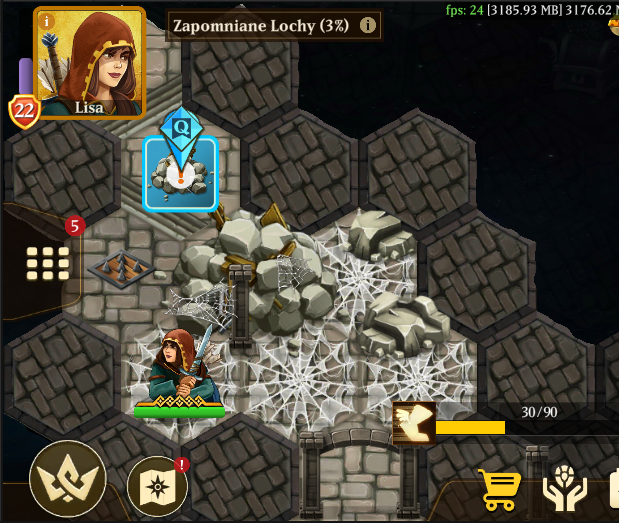
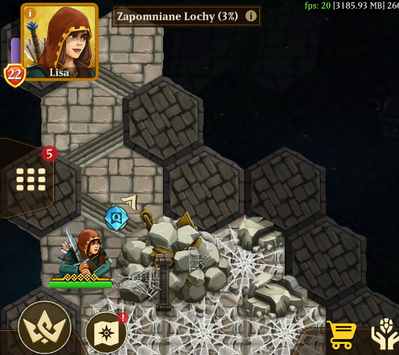
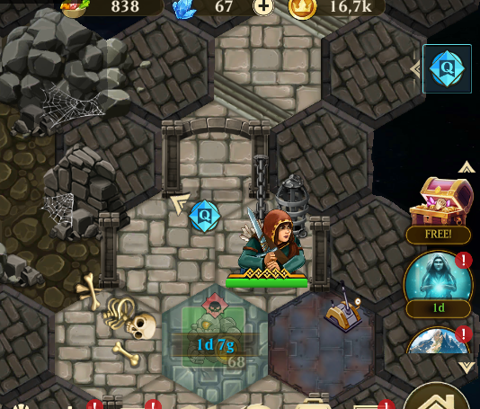

Hero Legacy
Mobile RPG - level and quest design
Hero Legacy is a mobile RPG with semi-open world, epic questline and real time combat. The game won the Best Polish Mobile Game award at Digital Dragons 2024. I worked on the title for about two years as level and quest designer. I made (or remade) all of the levels featured in the game, its world design, and most of the quests available for the player.
Link to the game's website: Hero Legacy
Link to the drive with additional content: here

Example map
The map above is Quicksands, part of many challenge maps for high level players. It features very high level enemies and bosses, and whole map is stamina challenge, with required minimum stamina to finish. Every movement drains player stamina, so exploration needs to be very careful, with only few places to recover. There are many points of interest (treasures, fights, NPCs) on the main route, but blocked by impossible stamina challenges, so the player needs to find another way to reach them. For the especially keen players, there are hidden passages to secret areas. The main quest on the map requires some backtracking, but the teleporters are placed conveniently for the player to get back where he needs to without an issue.
Example quest - Dungeon of Horror
This is one of over 80 quest I did for the game. The quest itself is on one of the challenge maps, for high level players.
The story: One of our trusted NPCs warns us of great, ancient danger locked in abandoned dungeon. We need to check if it is still there.
Objectives
- Meet Magnus in the Dark Canyon region.
- Enter the cave and find the way into the Dungeon.
- Find a way to remove the rubble to lower levels.
- Explore the second dungeon level.
- Survive the attack of monstrous prisoners.
- Find the way to the High Security level of the Dungeon.
- Repair the broken machinery.
- Check if Abomination is still in its cell.
- Report to Magnus about your findings.
Walkthrough
After completing Canyon Corruption questline and achieving level 60, the messenger with a letter addressed to the player will appear. In it, Magnus, the scholar from the Inquisition invites the player to meet him again in the Dark Canyon region, as he needs urgent help with one of the Inquisition long forgotten secrets.
# author: quest_main_info
You see the gnomkin running towards you, and handing you the letter.
The little creature then disappears without a trace.
# author: Pyria
Let's read it! May I? Great!
Let's see...
'Dear {player_name}, please meet me at my camp in Dark Canyon,
The Kingdom of Estaria is in dire peril. Or so I think. Anyway, please hurry!'
Signed: Magnus
# author: Kiana
We haven't heard from him in a long time. I wonder what he is up to this time.
# author: Narghal
Knowing him, probably something to do with corruption. Or talking monsters. But let's ask the man himself.
He is waiting in the camp on the eastern side of the Canyon, near the teleport. After meeting him, he explains the situation - in the cave nearby, the Inquisition build the secret dungeon containing all manners of corrupted monsters. The dungeon was abandoned long ago, and forgotten - Magnus just found out about it recently in the archives. However, one of the monsters held there was a mysterious Abomination. Magnus tried to check if it is still there, but couldn’t go into the dungeon as wandering monsters settled in. Player need to help him investigate.
# author: quest_main_info
As you approach the well-kept camp, you see Magnus, the Scholar looking at some papers on small table.
Hearing your footsteps, he looks up and meets your gaze.
# author: Magnus
Your Highness! This is an honour! Thank you for meeting me here, again.
I have made some disturbing discoveries, and I urgently need your help!
When I was searching through the Archives of the Inquisition recently, I came across an old manuscript
that mentions one of our dungeons. In it, there is something called 'an abomination' locked up!
# author: Pyria
Uuuh, an abomination! I always wanted to see one! Shall we have a look?
# author: Tallan
I have never heard anything that sounded more dangerous. But I'm too curious to say no.
# author: Magnus
This dungeon was abandoned long time ago, and I am worried if this abomination is still locked inside.
I haven't been able to check, as monsters have taken up residence.
Will you help me, {player_name}, and see if everything is alright?
+ [Another unknown danger. We must make our lands safe.] -> next
+ [I'm little bit curious, let's check it out!] -> next
== next ==
# author: Pyria
Great! Let’s go!
In the cave player need to find the entrance to the dungeon complex - fortunately the outer doors are broken.
# author: quest_main_info
The cave leads to the broken, half-buried entrance to the dungeon. Just outside, a lone skeleton in blue rags lies quietly, ancient parchment still in his bony hands.
# Author: Pyria
Wait, a note, let me see! It reads:
‘War, war with corruption never changes. I must deliver this message to...'
Oh, the rest is missing. Well, that was... something.
# Author: Narghal
Anyway, let's go to the dungeon. The monsters are waiting for us.
Inside, there are few groups of monsters hiding in now desolate rooms. The player needs to dispose of the ones blocking the way to lower levels. The rest are guarding some bonus pickups. After that, players get to a partially collapsed stairway.
# author: quest_main_info
The corridor and the stairs leading down
are fully blocked by the collapsed ceiling.
# author: Tallan
Hmm, we need to go deeper, but how do we remove this rubble?
# author: Jennie
I'm sure Magnus will help us with that. Let's go!
The rubble is too big to handle by themselves, so the player needs to get back to Magnus for help. He will supply the player with explosives to clear the rubble, but needs necessary ingredients.
# author: Magnus
So, the stairs are blocked? On one hand, this is good, on the other, we need to be sure if abomination is still there.
I have an idea, maybe a bit explosive one. Bring me the residue from Earth Slimes, and I will make something that will clear the passage. I need about 20 of these.
# author: Narghal
I can use some warming up before more serious fights, sounds good.
# author: Jennie
We'll return shortly with the Earth Residues!
Fortunately, the needed elemental residues can be looted from the elemental slimes that are nearby. Magnus will make the explosives shortly after getting the residues.
We have the Earth Residues we need.
# author: Magnus
Great, now stand back, the process is fairly delicate.
# author: Narghal
Don't blow this up.
# author: Magnus
Don't worry, I've done it before.
So... add this, and a little bit of that...
And it's done. Here, take it. And be careful. REALLY CAREFUL.
# author: Tallan
Let's go and clear the path. Carefully!
Returning to the blockade with explosives, the player can now open a path downwards
# author: quest_main_info
You set up the explosives, and step back.
# author: Pyria
Now we need to LIGHT IT UP! Can I? Pretty please!
# author: Jennie
I think no one is better prepared for this than you, Firebug.
# author: quest_main_info
Pyria lights the fuse, and after short while
the blockade explodes! The path is now clear.
# author: Narghal
Onwards, into the darkness!
After a long set of stairs, the party enters the prison section of the dungeon, covered in darkness.There is only one path forward, through a long corridor with rusted cells. At the end of ot, the prison’s guardpost with locked gate forward, and a lever.
# author: quest_main_info
You enter a long, dark corridor. On either side are rows of closed cells, shrouded in darkness.
There is no movement and the only sound you hear is your footsteps.
# author: Tallan
It... is unsettling. Look at all these rusty cells.
# author: Jennie
The Era of Corruption was an unsettling time, Tallan. Speaking of which, how do you feel, Narghal?
# author: Narghal
I sense corruption, even from these walls. But feel? I think I feel like I'm back in my memories.
Those unpleasant ones.
# author: Jennie
Let's be careful, everyone. And watch the shadows.
After pulling it, the backup power returns to the prison, and with it, the dim light reveals the slowly opening prison cells. The gate forward is still locked, and from the cells, there are noises of something waking up.
# author: quest_main_info
This room is different from the cells. You can see some discarded chains , cages and rusted weapons lying around.
The way forward is blocked by a solid door.
# author: Jennie
This looks like jailer's room, I am sure that there is a way out of here.
# author: Pyria
I found this lever, maybe it will open the door? Ugh... it's all stuck and rusted.
# author: Narghal
Stand aside, this will need some feat of strength.
# author: quest_main_info
With Narghal's powerful pull the lever creaks and moves.
Suddenly, dim light appears in the corridor, and the cells start to open!
You hear something moving in the shadows.
# author: Jennie
Did you hear that? I've got a bad feeling about this.
# author: Narghal
The corruption suddenly feels stronger. Enemies approach!
# author: Tallan
And unfortunately, this jailer's door is still closed. There must be some way around it.
 After fighting the monstrous prisoners the hero finds a broken wall in one of the cells, and a tunnel leading somewhere - one of the prisoners tried to dig himself out.
After fighting the monstrous prisoners the hero finds a broken wall in one of the cells, and a tunnel leading somewhere - one of the prisoners tried to dig himself out.
# author: Tallan
Those monsters surely were angry. I mean, I would be too
if I was locked in here all this time.
# author: Pyria
And it looks like one of them tried
to escape and dug out this passage!
# author: Tallan
Hopefully to the other side of the dungeon. Let's go!
Going through a tunnel provides a stamina challenge for the hero. On the other end, we can see the room with remains of a prisoner, two sets of locked gates and still working sentry automaton. After the fight the hero can open both of them and venture down
# author: Tallan
Another locked door and another rusty lever!
Narghal, do the honours.
# author: Narghal
No need to tell me twice.
# author: quest_main_info
Narghal's strength is too much for the second lever.
It moves easily, and the doors open.
# author: Narghal
Ha! These contraptions cannot stop us. So far, so good.
Let's go deeper.
The lowest level of the dungeon is maximum security, with three big cells and a control panel before them.
# author: quest_main_info
This part of the dungeon looks different. There are three massive stone cells in the distance,
and a large lever on the pedestal in the main room.
# author: Jennie
This must be the high-security section of the dungeon. I am sure that
the Abomination will be locked in one of these cells.
# author: Narghal
Another lever for me to conquer. Step aside, weaklings, and witness the strength of Narghal!
# author: Tallan
No, Narghal, wait!
# author: quest_main_info
Narghal grabs the lever and pulls with all his might. You hear a rustle, then a snap!
The lever breaks, leaving the handle in Narghal's hand.
# author: Narghal
That's... not good.
# author: Tallan
What's done is done. I think I can fix it. Hopefully there are some spare parts around here somewhere.
Let's look around.
After a mishap with trying to open the passages, the party needs to find a way (and spare parts) to repair the panel. Luckily, there is a place with them on this level. However, it is guarded by automatons.
# author: quest_main_info
This large room is full of old, broken machines, spare parts and tools.
In the centre you can see a large automaton covered in rust.
# Author: Tallan
This is the place! Look, there should be the parts we need.
But watch out for this metal guardian, it might still be functional.
# Author: Pyria
Oh, I think it just moved a bit...
# Author: Narghal
Prepare for battle!
# author: quest_main_info
After a short while Tallan repairs the device.
# author: Tallan
That should do it. Narghal, please pull this lever...
GENTLY.
# author: Narghal
Do not worry, being gentle is my second nature.
Or maybe the third.
# author: quest_main_info
This time, the lever pulls without issue. All of you hear three distant clicks.
# author: Pyria
Let's take a look!
After repairing the console, the way to high security cells is open. Every cell has a corridor leading to it, filled with traps (increasingly difficult stamina challenges). Finally, the party can get close to the cell holding the Abomination.
# author: Jennie
This is the cell.
The Abomination is inside.
# author: Abomination
What did you call me?
# author: Pyria
Abomination? Is that you?
# author: Abomination
That’s extremely rude! How would you feel if I called you an abomination?
# author: Pyria
Well, that depends on if I really was an abomination or…
# author: Narghal
I think we should just go in. Let’s be brave and face this horror the Inquisition was so afraid of.
Player goes inside, and confronts the Abomination.
# author: quest_main_info
You enter the cell cautiously. The light you bring is the first that this remote place has seen in centuries.
And out of the darkness gracefully emerges an orange cat wearing a small straw hat.
# author: quest_cat_in_a_hat
Finally, after all these years… I am free!
# author: Pyria
CUUUUTEE!!!
# author: Narghal
An abomination is a cat?
# author: Pyria
A cat in a hat!
# author: quest_cat_in_a_hat
Not just any cat, a magical one! I was caught in a swirl of corruption magic,
but managed to hop off at the very last second. The corruption changed me - but not entirely.
I can speak, and do funny tricks, but nothing more. I guess one can call me a medical miracle.
# author: Jennie
That’s incredible!
# author: quest_cat_in_a_hat
That’s what I think too! But the Inquisition had a different approach.
They are very strict when it comes to corrupted beings.
How do they phrase it… “no mercy policy”.
# author: Narghal
And for how long have you been locked in here?
# author: quest_cat_in_a_hat
Long enough for all my siblings and family to be long gone…
# author: Narghal
I think we should let him free. I don’t sense any evil in that creature, although I do sense corruption.
And sometimes that is possible - Kerrik and I are two best examples of that. What do you say, {player_name}?
+ [I agree.] -> next
+ [Yes. The world needs more cats in hats.] -> next
== next ==
# author: quest_cat_in_a_hat
Thank you!!! I will never ever forget your kindness.
Oh, did I mention I can make gifts out of nothing?
Tadaah! Here, that’s for you.
# author: Tallan
We should return to Magnus and tell him all about it.
After freeing the creature, the player returns to Magnus to tell him what happened
# author: Magnus
... That was a story! Good that you resolved this issue. So, my work here is done!
Thank you again, {player_name}!
# author: Narghal
I have enough dungeons for a while.
But, the cat in a hat was indeed cute.
# author: Pyria
Ha, I told you so!